Step01
#水力散漿
在散漿機中，透過機械力、摩擦力、水剪力離解為纖維， 紙張結構破壞；油墨與雜質再經過去污、脫墨、篩選逐段分離移除。
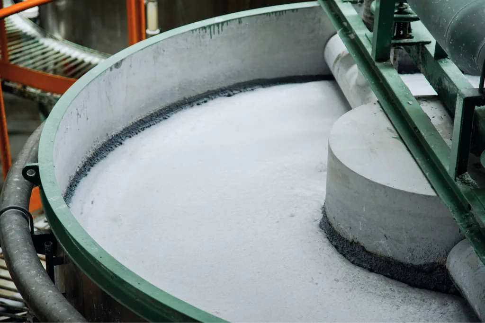
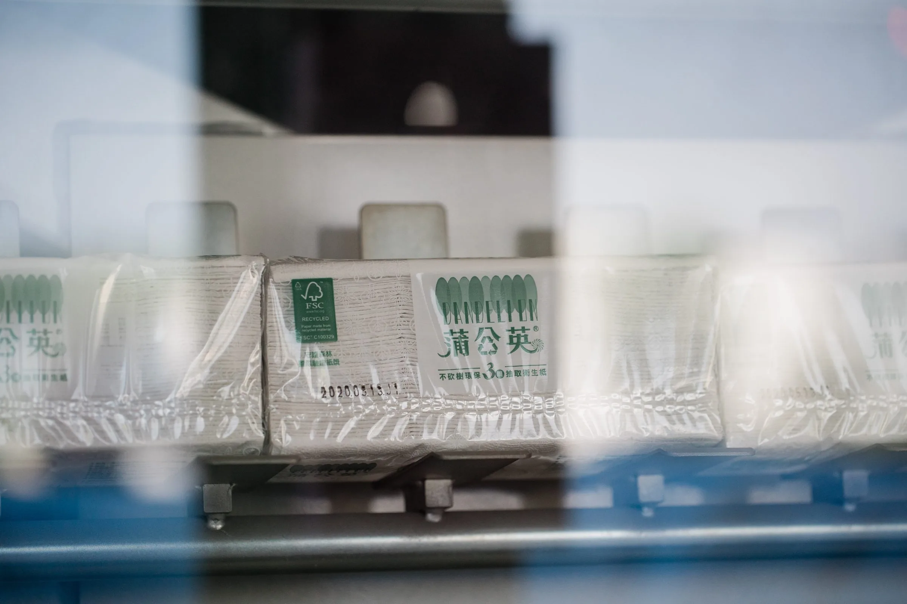
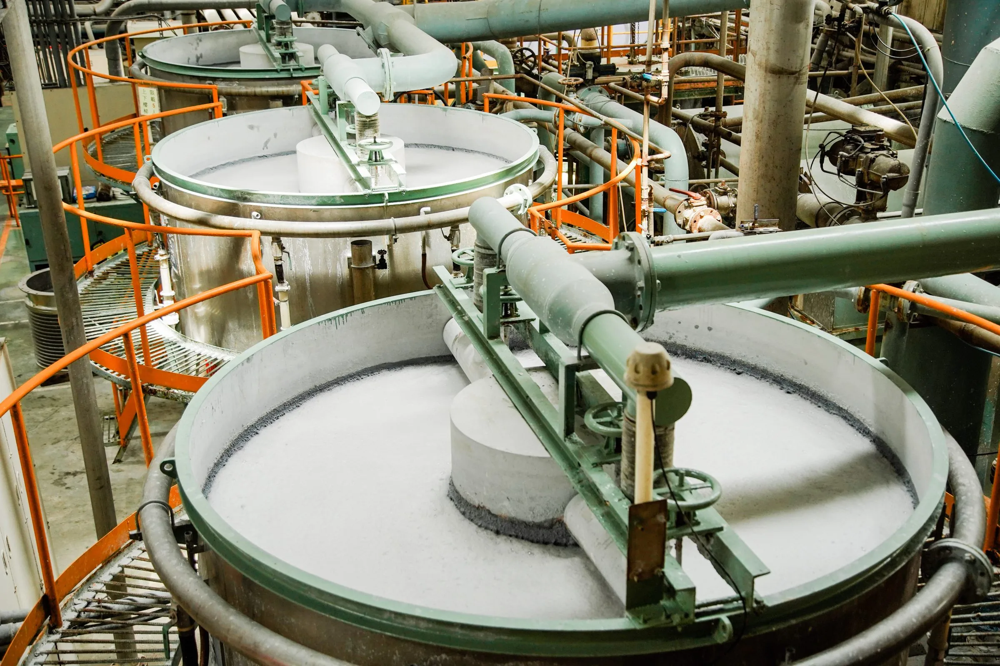
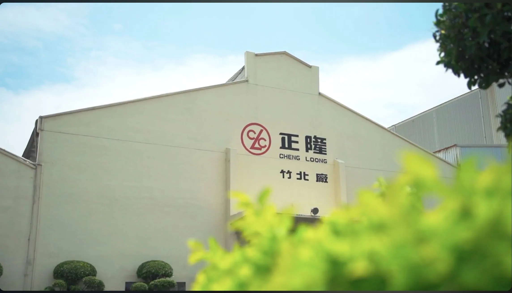
再生機密文件
15,813公噸
累計貢獻減碳
91,715公噸 CO2e
316,260棵樹
236座大安森林公園
Document Destruction
「水銷」，是以水力散漿將機密文件徹底銷毀的服務。
文件在水中散解成為紙漿，內容不可能再被復原；
而這些紙漿會直接回到產線，循環再製成「多元再生紙品」。
正隆投入水銷服務多年，從預約、銷毀前準備到入場執行，皆有完善流程確保機敏資料能完整銷毀。
正隆採用即送即銷的做法，保障客戶的資訊安全，並開放現場監銷，讓水銷流程能在監督下確實執行。
將銷毀後的回收紙原料，再次投入生產，製成環保衛生紙或卡紙，讓廢棄的文件煥發新生，實現資源永續。
每次水銷都留下完整紀錄與銷毀證明，可作為內部核銷憑據，或提供有 永續揭露需求的企業引用。
水銷價值循環
100%安全銷毀到永續效益，建構企業專屬綠色生態圈
From document to daily paper
紙張的強度來自纖維之間的交織結合。
文件進入散漿機後，在水中以機械力、摩擦力、水剪力離解為纖維，
紙的結構隨之破壞，表面承載的內容無從還原；
而纖維本身只是被分開、並未被破壞，因此能重新製造成新的紙。
銷毀與再生，是同一道製程的兩面。
Service Process
至少提前3天預約，並移除文件中大型金屬夾具。
依預約時段抵達廠區，入廠後卸料。
水力散漿徹底銷毀，機密文件內容無法辨識或復原，並可循環再製成多元再生紙品。
於水銷日後1~2天，依據水銷重量發放綠點
STEP01
依載運文件的車輛選擇車型、台數，並勾選是否需要堆高機協助卸棧板、是否需全程見證監銷錄影。
STEP02
STEP03
週一～週五開放上午 8:30–11:00、下午 13:00–16:00 時段，請於到廠日三天前完成預約。
STEP04
確認預約編號、進場時間。請於出發前依據紙張分類注意事項完成前置作業、確認廠區動線與進場安全須知。
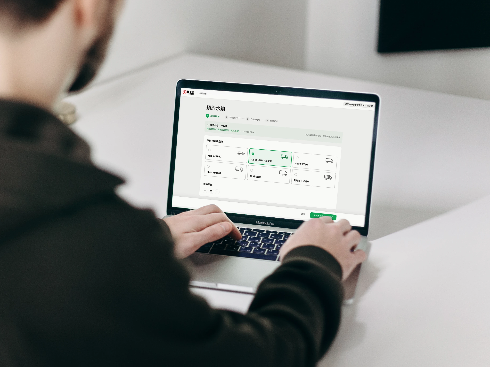
請挑出長尾夾、活頁夾與金屬夾等大型金屬，避免損壞設備並維護回收品質。
塑膠與紙張分離後再打包。塑膠製品在製作紙漿的過程中造成生產線負擔，也會拖慢後續製程。
方式一：不裝箱，直接綑綁或裝袋
紙張不裝入紙箱，可採綑綁或裝袋方式整理，送達現場後即可直接投入銷毀產線，省去拆箱作業，流程快速且更環保。
方式二：裝箱送廠
紙張以紙箱裝箱送廠，抵達後需由送件人員自行拆箱取出紙張，再由現場專人引導投入銷毀產線；空紙箱可現場回收。因增加拆箱整理作業，處理時間較長，請依需求斟酌選擇。
『瓦楞紙箱纖維顏色較深，不能進入家庭用紙產線。 』
不需額外取出，整箱直接進入產線即可。
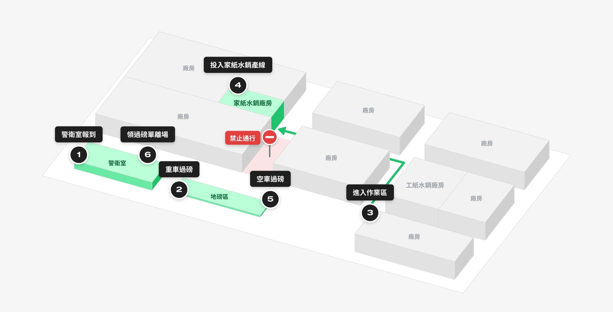
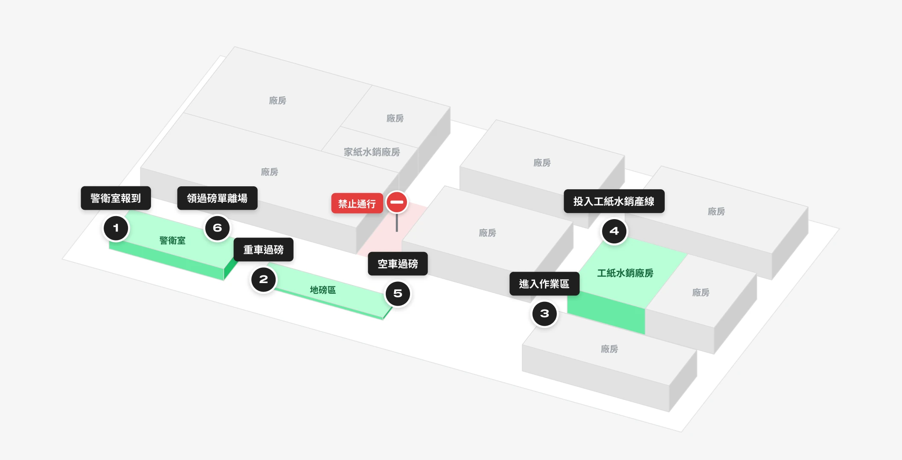
抵達廠區後於警衛室報上公司名稱，核對預約資料後開放進場。
載著文件的車輛先上地磅，記錄進場總重。
跟隨現場指引，將車輛開入家庭/工業用紙作業廠區。
將要水銷的文件投入輸送帶，運送至水銷設備中進行銷毀。若現場判定產線與預約不同，現場人員會先說明。
車輛離開水銷廠區，開至入口處空車再次過磅，與進場總重的差額即為本次水銷淨重。
磅單紙本正本當場領取，載明總重、空車重與淨重。
可左右滑動查看
GREEN POINTS & DIGITAL CERTIFICATES
在 ESG 與資安保密備受重視的趨勢下，「資安防護」與「量化永續績效」已是企業營運的關鍵課題。然而，傳統機密文件銷毀，多半僅被視為單次的行政支出。
正隆透過水力散漿技術徹底銷毀文件，並結合綠點存摺與數位證明，將企業提供的每1KG回收紙，轉化為可量化的永續資產。
綠點可用於綠色採購與公益捐贈，協助企業擴大永續效益。
GREEN POINTS
讓機密文件銷毀轉化為看得見的永續資產，靈活串聯企業營運與社會公益。
水銷作業完成後，系統將依據水銷之重量發放「綠點」至企業綠點存摺（1 點 = 1元）。點數可用於折抵正隆蒲公英環保家用紙採購；亦可選擇捐贈予公益團體—您每捐贈 1 點，正隆即加碼 0.5 點，攜手放大 1.5 倍的永續影響力。
用途一｜企業採購折抵
透過綠點折抵正隆蒲公英環保家用紙採購，於平台送出需求後將由專人主動與您聯繫。
用途二｜公益捐贈
捐出綠點，正隆加碼 0.5 倍，兌換指定蒲公英環保家用紙捐贈公益團體，攜手放大 1.5 倍永續影響力。
CERTIFICATES
每次送件從預約、到廠、過磅至完成銷毀，皆留存完整紀錄。企業可於系統查詢歷次明細，並自動換算貢獻減碳量、保留樹木棵數等環境效益。
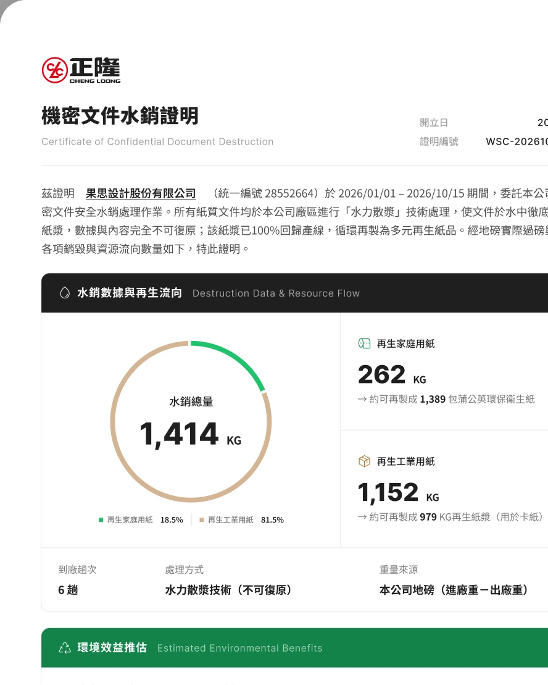
機密文件水銷證明
水銷作業完成後，系統即產出「機密文件水銷證明」，供企業於後台下載歸檔，作為內部管理及永續績效佐證。
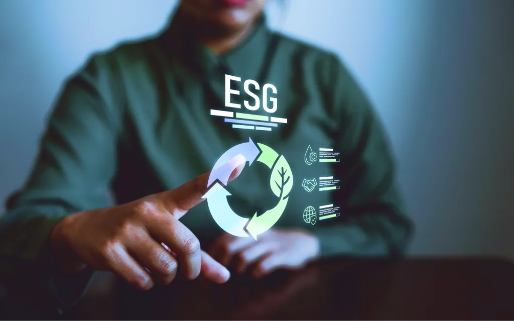
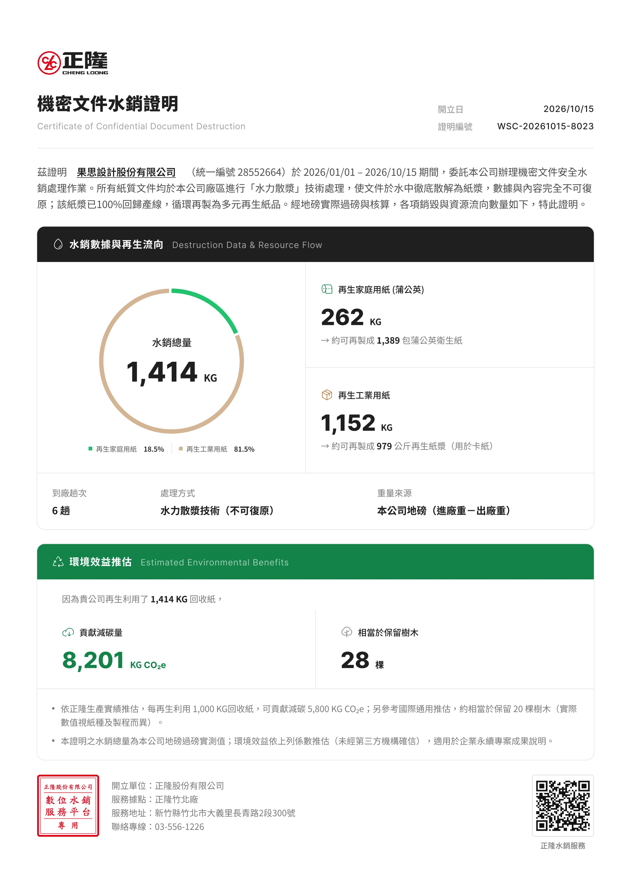
FAQ
預約完成頁會提供進場動線圖與到廠注意事項（含警衛室報到、地磅人員登記車號過磅至水銷區流程）。出發前花一分鐘確認，到廠後照圖行進即可。
為確保廠區作業安全與過磅效率，本服務全面採用線上預約制。請先於平台完成預約並取得預約編號後再行前往。
線上預約時無需填寫車號。車輛抵達廠區報到時，將由現場地磅人員直接於系統核對預約資訊並登記車號過磅，方便您彈性調配運送車輛。
本服務為正隆免費提供之機密文件水銷處理服務，不收取任何處理費或手續費。
本服務未設定單次最小送銷重量限制，歡迎透過系統預約到廠銷毀。
為維護紙漿循環品質，請務必移除金屬夾具、拆除塑膠資料夾、塑膠封面。少量一般訂書針則可直接進入水銷系統。
可使用紙箱裝箱、紙袋盛裝或以繩索綑綁妥當，以便於現場搬運與過磅作業。
目前集中於正隆竹北廠進行水銷服務。開放時段請以線上預約系統顯示之時段為準（廠區保養日與國定假日除外）。
文件過磅銷毀當下，現場地磅人員會提供實體磅單供您攜回作為初步憑證。此外，系統預計於 48 小時內完成數據比對並自動產出「機密文件水銷證明書」，企業可隨時至「企業後台」下載數位檔案歸檔，作為內部紀錄與永續專案成果佐證。
綠點永久有效，無期限限制。工業用紙產線水銷為 1 KG＝1 點；家庭用紙產線水銷為 1 KG＝2 點（含正隆加碼 1 點）。每1點具新臺幣1元之正隆指定商品採購折抵或公益捐贈價值。
企業可透過平台送出「指定環保產品」採購需求，將由專屬業務窗口主動聯繫對接；亦可選擇劃撥捐贈予正隆合作公益機構，正隆即另行加碼 0.5 倍點數效益（攜手放大 1.5 倍永續影響力），兌換指定家用紙品捐贈公益團體。
本證明之貢獻減碳量與預估保留樹木棵數，係依據正隆生產實績及參考國際通用推估進行計算，未經第三方機構確信，適用於企業永續專案成果說明。